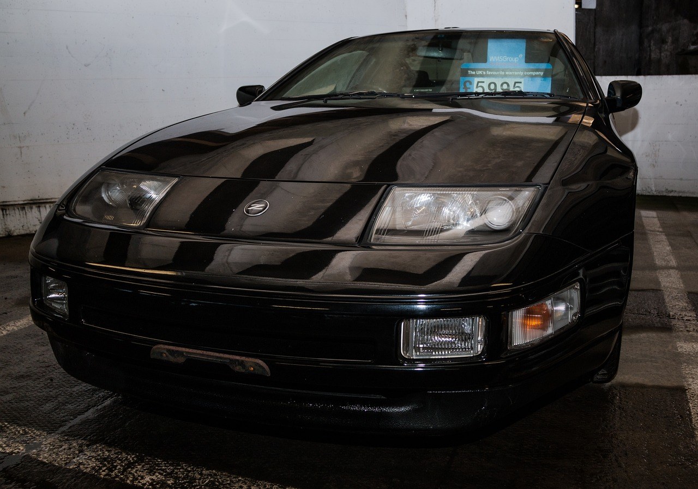
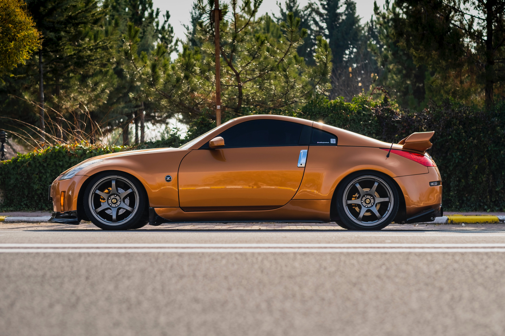
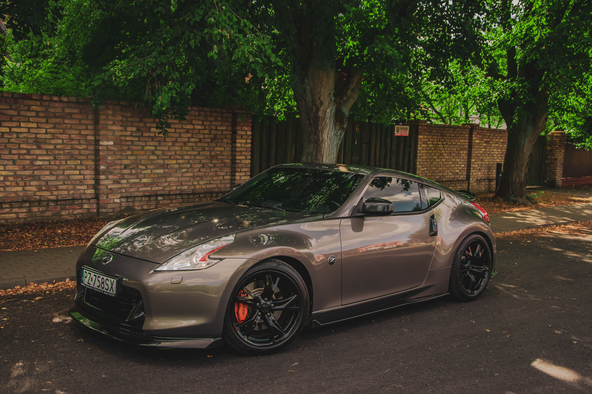

"Nissan 300ZX (Z32) 1989-2000"
The Nissan 300ZX was Nissan's Magnum Opus of engineering. Throughout it's development, it would become the first sports car ever designed with CAD (Computer-Assisted design), and because of such it had an extremely aerodynamic body shape. Paired with it's new VG30DETT, a twin turboed, quad cammed V6 capable of easily boasting 280HP in stock form. The Z32's major weakness was it's overly heavy weight. Coming in at 3500 lbs from the factory, most long term owners find turbochargers to be the perfect fix. *The car was originally planned to take the Supra's place in Fast and the Furious! It ended up being replaced when there weren't enough slick-top models produced.*
"Nissan 350Z (Z33) 2002-2009"
The 350Z appeared as Nissan's new step into the millenium came rushing in through the Aluminum block VQ35DE committing 287Hp without any procharging. This new Z had a massive popularity with the tuner scene, and because of such they became a cornerstone of the drifting community.
"Nissan 370Z (Z34) 2008-2021"
Riding the wave of the 350Z's popularity, the 370Z showed major improvements on the Z's form, as well as using the tighter 240Z's sizing to give it a sportier feel. It came with an incredible VQ37HR, an improved engine which made a much better overall powerband than it's predecessors.
"Nissan Z (RZ34) 2023-Present"
A new era needs a new Z. Coming brand spanking new with a twin turbo v6 pressing an impressive 400hp, making it an easy track monster from the box. Enthusiasts believe they look much better in person than in photos. The car pays immpressive homage to it's predecessors of Z-Car history.